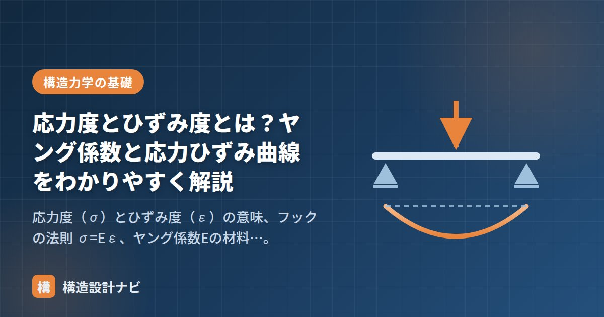

応力度とひずみ度とは？ヤング係数と応力ひずみ曲線をわかりやすく解説

「応力（N・Q・M）」が断面全体に生じる力だとすれば、応力度は単位面積あたりの力、ひずみ度は単位長さあたりの変形です。この2つを結びつけるのがヤング係数 Eで、材料の硬さ（変形しにくさ）を表す、構造設計で最も基本的な材料定数です。
応力度 σ：単位面積あたりの力
材料が耐えられるかどうかは、力の大きさそのものではなく「単位面積あたりにどれだけの力がかかっているか」で決まります。これが応力度です。代表的な応力度は次のとおりです。
| 応力度 | 求め方 | もとになる応力 |
|---|---|---|
| 軸方向応力度 σ | σ = N / A | 軸力 N ÷ 断面積 A |
| 曲げ応力度 σb | σb = M / Z | 曲げモーメント M ÷ 断面係数 Z |
| せん断応力度 τ | τ = Q / A（平均） | せん断力 Q ÷ 断面積 A |
単位はいずれも N/mm²。許容応力度計算では、この応力度が材料の許容値以下であることを確認します。
ひずみ度 ε：単位長さあたりの変形
力を受けた材料は伸び縮みします。その変形量 ΔL を元の長さ L で割った値がひずみ度 ε です。
「3mの柱が2mm縮んだ」と「30cmの試験体が2mm縮んだ」では変形の度合いがまったく違います。長さで割って比率にすることで、部材の長さによらず材料の状態を比較できるようにした値がひずみ度です。
フックの法則とヤング係数 E
多くの材料は、力が小さい範囲では応力度とひずみ度が比例します。これがフックの法則です。
主な構造材料のヤング係数は次のとおりです。
| 材料 | ヤング係数 E（N/mm²） | 備考 |
|---|---|---|
| 鋼材 | 2.05 × 10⁵ | 強度（SS400・SN490等）によらず一定 |
| コンクリート | 約 2.1〜3.3 × 10⁴ | 設計基準強度 Fc が高いほど大きい |
| 木材 | 約 7 × 10³〜1.2 × 10⁴ | 樹種・等級により幅がある |
- 鋼材のヤング係数は強度に関係なく一定（2.05×10⁵ N/mm²）。SS400をSN490に変えても、強度は上がるがたわみは小さくならない。
- 鋼材のEはコンクリートの約10倍。RC断面の計算では、この比（ヤング係数比 n）を使って鉄筋をコンクリート断面に換算する。
計算例：柱の縮み量
高さ L = 3m の鋼管柱に圧縮応力度 σ = 140 N/mm² が生じているとき、ひずみ度と縮み量は：
大きな応力度がかかっていても、縮みはわずか2mm。鋼の「硬さ」が実感できる結果です。
応力ひずみ曲線の読み方（鋼材）
材料を引張試験にかけ、横軸にひずみ度・縦軸に応力度をとったグラフが応力ひずみ曲線です。鋼材の曲線には、設計上重要なポイントがいくつもあります。
図：鋼材の応力ひずみ曲線。直線部分の傾きがヤング係数 E にあたる。
- 弾性域：直線部分。力を除けば元の形に戻る範囲で、直線の傾きがヤング係数 E。
- 降伏点：これを超えると力を除いても変形が残る（塑性変形）。SS400の降伏点は235 N/mm²（板厚40mm以下）。
- 引張強さ：曲線の最高点。SS400の「400」はこの引張強さ（400 N/mm²以上）を表す。
- 破断：降伏後も鋼材は大きく伸びてから破断する。この「粘り（じん性）」が耐震設計で重視される鋼材の長所。
応力度のもとになる応力（N・Q・M）は「応力とは？」、応力度の検定の流れは「許容応力度計算とは？」で解説しています。
若手の構造計算書をチェックしていると、鋼材のグレードを上げてたわみ計算をやり直している例をよく見かけます。ヤング係数は強度によらず一定なので、たわみを抑えたいなら断面を大きくするしかありません。この勘違いは指導のたびに必ず説明しています。
材料ごとのヤング係数と特徴
| 材料 | ヤング係数 E（N/mm²） | 特徴 |
|---|---|---|
| 鋼材（すべての鋼種共通） | 205,000 | 強度が違ってもEは同じ。変形しやすさは鋼種によらない |
| コンクリート Fc21 | 約 21,500 | 強度が高いほどEも大きくなる |
| コンクリート Fc36 | 約 27,500 | 鋼材の約1/8 |
| 木材（スギ） | 約 7,000 | 繊維方向。直交方向は1/20以下 |
| 木材（ベイマツ） | 約 10,000 | 樹種による差が大きい |
| 集成材（E105） | 約 10,500 | 等級の数字がそのままEを表す（E105＝10.5kN/mm²） |
| アルミニウム | 約 70,000 | 鋼の約1/3。同じ断面なら3倍たわむ |
とくに重要なのが「鋼材はSN400でもSN490でもE＝205,000で同じ」という点です。強い鋼材に変えれば強度は上がりますが、たわみはまったく改善しません。たわみが問題になっている梁で鋼種をSN490に変えても無駄で、断面二次モーメントIを大きくする（せいを増やす）しかありません。実務で意外に見落とされるポイントです。
応力ひずみ曲線を材料ごとに比べる
この曲線の形の違いが、そのまま構造設計の考え方を決めています。鋼材が耐震設計の主役なのは、強いからではなく粘り強いからです。降伏した後も破断せずに伸び続けるため、地震のエネルギーを変形に変えて吸収できます。
一方コンクリートは圧縮に強い反面、ピークを超えると急激に壊れます。RC造で帯筋・あばら筋を密に入れるのは、コンクリートを横から拘束して「脆い壊れ方」を「粘りのある壊れ方」に変えるためです。
σ＝E×ε（フックの法則）が成立するのは、降伏点までの弾性範囲だけです。降伏を超えると応力がほとんど増えないのにひずみだけが大きくなるため、この式は使えなくなります。
許容応力度計算（一次設計）が弾性範囲での検討であるのは、この式が成り立つ範囲に収めているからです。保有水平耐力計算（二次設計）では、あえて降伏を超えた領域を扱うため、まったく別の考え方（塑性理論）が必要になります。
「一次設計は弾性、二次設計は塑性」という区分けの根拠は、この応力ひずみ曲線のどこを使っているかにあります。
よくある質問
Q1. ヤング係数が大きいとどうなりますか？
同じ力をかけても変形しにくくなります。ヤング係数Eは「材料の硬さ」を表す値で、鋼材はE＝205,000N/mm²、コンクリートはその約1/8、木材は約1/25です。たわみの計算式（δ＝5wL⁴/384EI）にEが分母で入るため、Eが大きい材料ほどたわみが小さくなります。
Q2. 強い鋼材に変えればたわみは減りますか？
減りません。鋼材のヤング係数はSN400でもSN490でもE＝205,000N/mm²で同じです。強度が上がるのは許容応力度であり、変形しやすさは変わりません。たわみを減らすには断面二次モーメントI（せい）を大きくする必要があります。実務で見落としやすいポイントです。
Q3. 応力度とひずみ度はどう違うのですか？
応力度σは「単位面積あたりに生じている力」（N/mm²）、ひずみ度εは「元の長さに対する変形の割合」（無単位）です。力の大きさを表すのが応力度、変形の程度を表すのがひずみ度で、両者はフックの法則 σ＝E×ε で結ばれています。
まとめ
- 応力度 σ は単位面積あたりの力（N/mm²）、ひずみ度 ε は単位長さあたりの変形（無次元）。
- 弾性範囲では σ = Eε（フックの法則）。E が大きいほど硬い材料。
- 鋼材の E は 2.05×10⁵ N/mm² で強度によらず一定。強い鋼材に変えてもたわみは減らない。
- 応力ひずみ曲線では、降伏点・引張強さ・破断までの伸び（じん性）を読み取る。